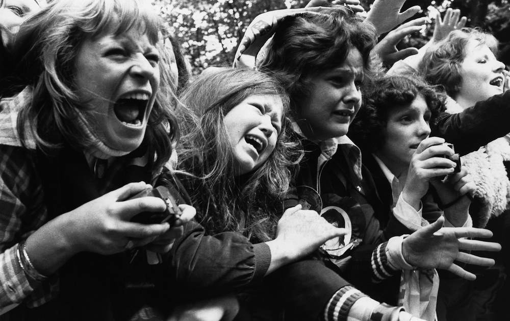

To understand how emo sits within the twenty-first century rock scene, we need to talk a little bit about authenticity. As is evident throughout its history, rock’s identity often emerges from its outward rejection of the mainstream culture. We see this when 70s punks refuse “straight” culture, when hardcore dudes (nominally) reject capitalism, conservative politics, and the music industry, and when rock radio DJs performatively burn disco albums for their ravenous audiences.
In a broad sense, authenticity is just a measure of how well something lives up to what is claims to be.1 If, for example, something like an underground rock scene claims to be anti-capitalist, then participants in the subculture must behave in ways that appear anti-capitalist to be seen as “authentic.” But, in an effort to narrow our scope here from one of the oldest philosophical concerns in human history to something more manageable, it will be most effective for us to focus specifically on how authenticity connects to branding and subcultural politics.
Here, it’s helpful for us to think of authenticity as a discourse rather than a “real” phenomenon with fixed, consistent boundaries. Authenticity in a rock subculture like punk, hardcore, or emo depends on how well a person can adhere to the subculture’s chosen values, which are socially-constructed and shaped by larger social forces like race, gender, and class. The endless arguments scattered across the internet over which bands are really punk or really emo (which, I will point out, are largely dominated by men) engage in these discourses—the “authentic” here depends on how well a band, artist, or fan lives up to a person’s subcultural expectations.
In her book AuthenticTM: The Politics of Ambivalence in a Brand Culture, Sarah Banet-Weiser describes authenticity as a relationship between individuals and the cultures that they inhabit. Through an in-depth analysis of cultural spaces historically perceived as “authentic” (the self, politics, creativity, and religion), she illustrates how individuals increasingly tolerate “blurring” between their sense of self and their consumer habits in the modern era. And although rock subcultures still remain pretty outwardly resistant to this type of blurring, it’s useful to look at how these spaces understand themselves in relationship to our late-capitalist, brand-obsessed world.
As Banet-Weiser argues, authenticity in the modern era is a cultural discourse that exists “within the parameters of brand culture.”2 Put more simply, this means that when everything is a brand, authenticity itself becomes a brand as well—one that is particularly effective at making sales. Underground rock subcultures engage with this type of discourse when they bill themselves as uniquely real in contrast to mainstream music, which is constructed as an artificial corporate attempt to rake in cash via low-effort pop songs. Here, a particular definition of authenticity structured in opposition to mainstream pop music 
Emo of the 80s and 90s sold itself as a uniquely authentic type of music in comparison to mainstream pop, arguing for its own legitimacy through performances of brooding, suburban, sad-boy masculinity. My Chemical Romance refused to adhere to this version of “emo authenticity,” instead painting on glittery makeup and singing songs about vampires and gay sex. Their love for feminine performance and queer tastes branded them inauthentic within the emo's discourse of authenticity.
1 Somogy, Varga and Charles Guignon, “Authenticity,” Stanford Encyclopedia of Philosophy, February 20, 2020, https://plato.stanford.edu/entries/authenticity/#toc.
2 Sarah Banet-Weiser, AuthenticTM: The Politics of Ambivalence in a Brand Culture (New York University Press, 2012): 13.